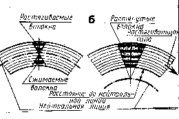

ГИБКА МЕТАЛЛА. ОСНОВНЫЕ СВЕДЕНИЯ
ГИБКА
это слесарная операция, при которой геометрическая форма изменяется в результате её пластического деформирования.
СПОСОБЫ ГИБКИ
РУЧНАЯ:
на опорном инструменте и оправках
В холодном состоянии
НА ГИБОЧНЫХ МАШИНАХ:
(пресса)
В горячем состоянии
ГИБКОЙ ПОЛУЧАЮТ
Детали сложной пространственной формы (хомуты, скобы, элементы трубопроводов сложной формы, а также изделия из тонких листовых материалов для последующего соединения сваркой или пайкой)
НАПРЯЖЕНИЯ В ЗАГОТОВКЕ ПРИ ИЗГИБЕ
В процессе гибки металл подвергается одновременному действию растягивающих и сжимающих усилий, на наружной стороне заготовки – волокна растягивается, длина их увеличивается, на внутренней стороне волокна сжимаются, а длина их укорачивается.
Для получения изогнутой заготовки необходимо, чтобы напряжение изгиба превышали предел упругости, тогда деформация заготовки будет пластической. При изгибе заготовок из листового металла пластическая деформация сопровождается упругой, поэтому в согнутой на определённый угол заготовке после снятия напряжения происходит явление распружинивания, т.е. угол загиба, как правило увеличивается, а заготовка немного выпрямляется. Угол на который выпрямляется заготовка вследствии пружинения, называется углом деформации. Величина этого угла зависит от марки металла и толщины заготовки, а также от радиуса гибки. .